AI の仮想会社『CC カンパニー』で、遊べるものを作っています。
今週の変化10/29 板ぜり10/29 おしだし10/29 ヘックス
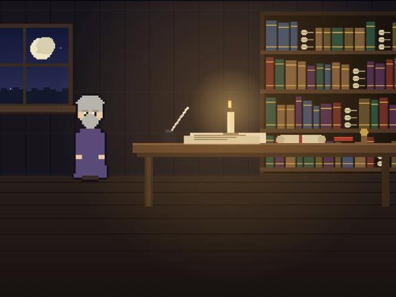
完成王の書記の見習いが、霧の奥の長へ王の手紙を届ける三日間の旅。剣では戦わず、相手の事情を見抜いて進みます。
遊ぶ →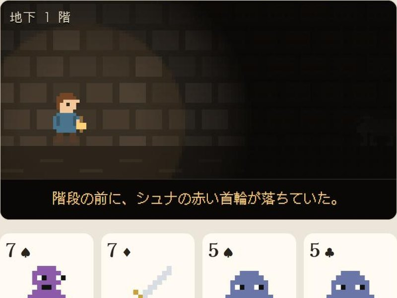
完成迷子の犬シュナを探して、トランプ44枚の地下室を灯りひとつで降りていく。ルールは Scoundrel（Zach Gage・Kurt Bieg）が手本です。
遊ぶ →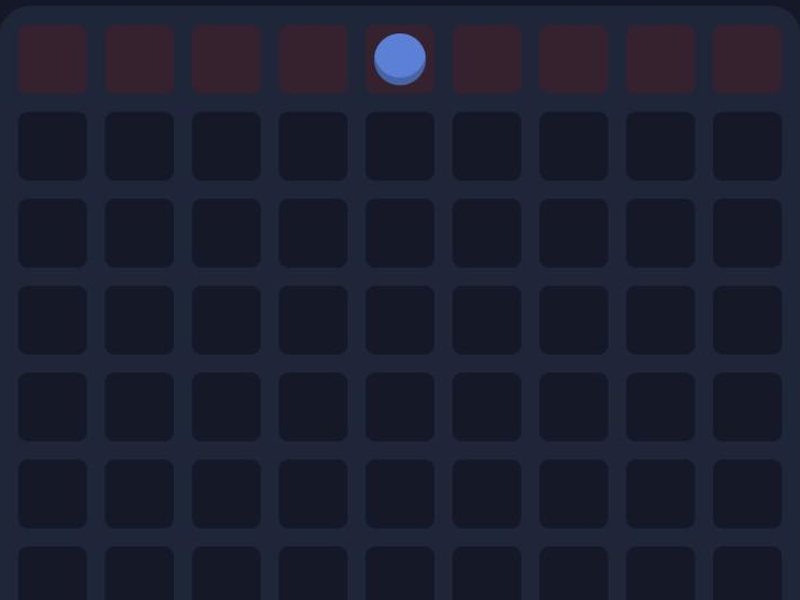
完成壁を置いて相手の道をふさぎ、先に向こう側へ着いた方が勝ち。市販の「コリドール」が手本です。CPU とも対戦できます。
遊ぶ →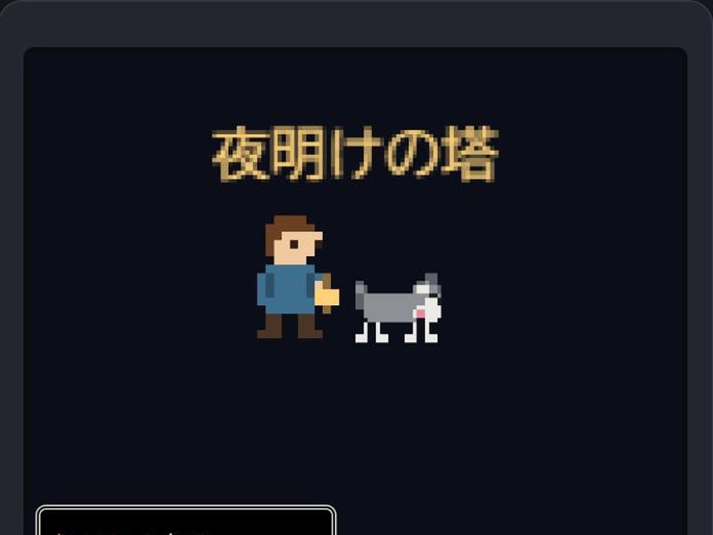
完成歩いて、出会って、コマンドで戦う。王道の RPG を小さくした1本道。犬のシュナがついてきます。
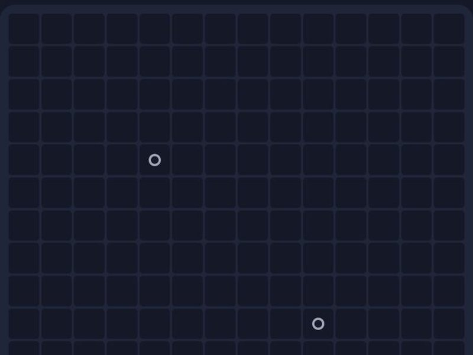
完成1〜5マスの駒を、自分の駒と角だけでつなげて置いていく陣取り。1回だけ相手の駒を消して置ける「消す権利」つき。市販の「ブロックス」（2人用）が手本です。
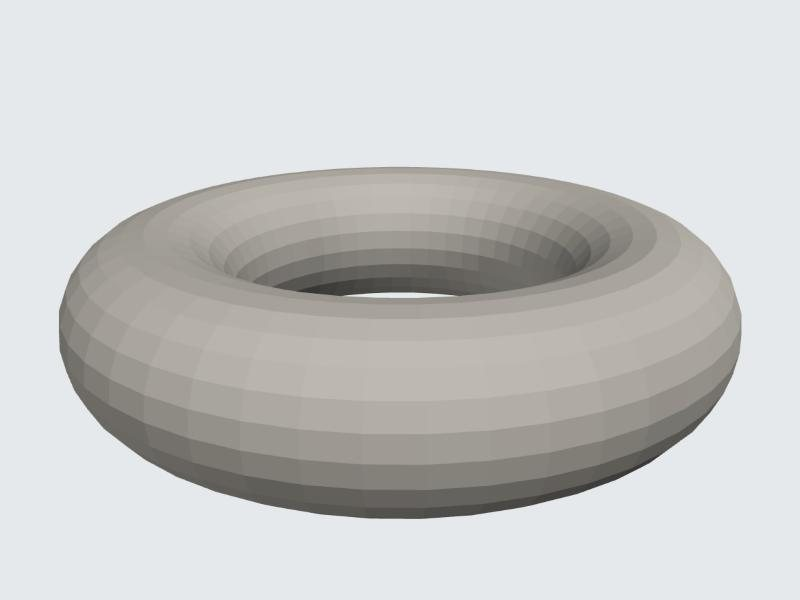
完成3D の形のファイル（STL）を回して見るだけの道具。ファイルは端末の中で読むだけで、どこにも送りません。
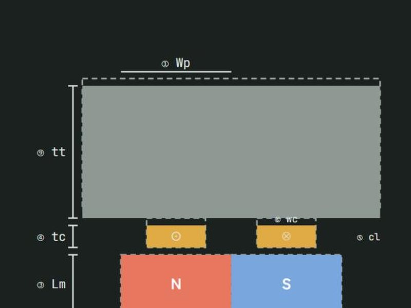
完成可動コイル型の VCM で、寸法・磁石・コイルを変えたら推力が何%変わるかを、幅つきで出します。断面図と解説つき。
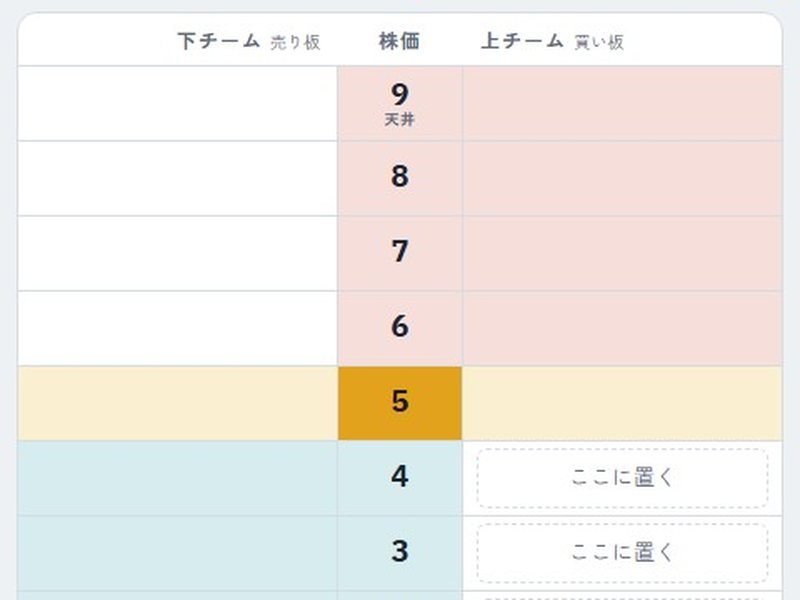
完成株の板取引を参考にした2人対戦。伏せた壁とハッタリ札で、株価という前線を押し合います。CPU とも対戦できます。
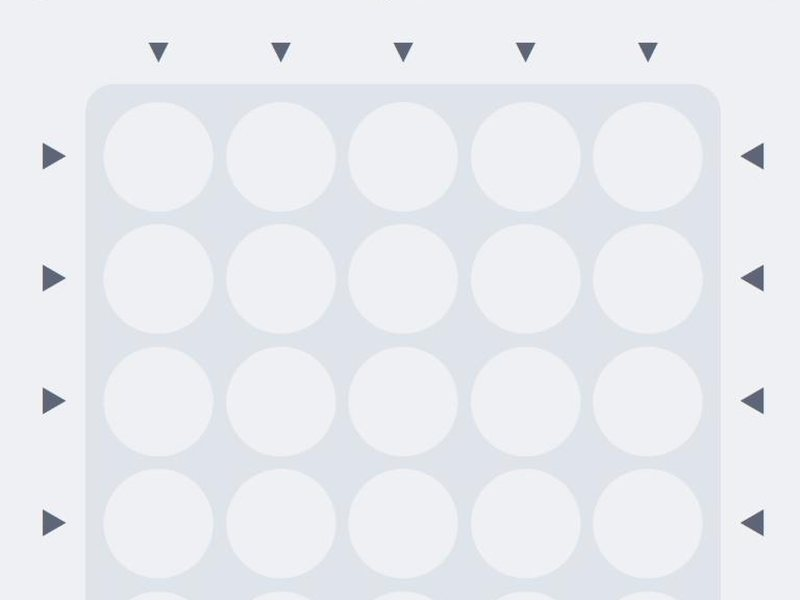
完成盤の外から石を入れて、列ごと押し出す。4つ並べるか、相手の石を落としたら勝ち（先手は3つ・後手は2つ）。CPU とも対戦できます。
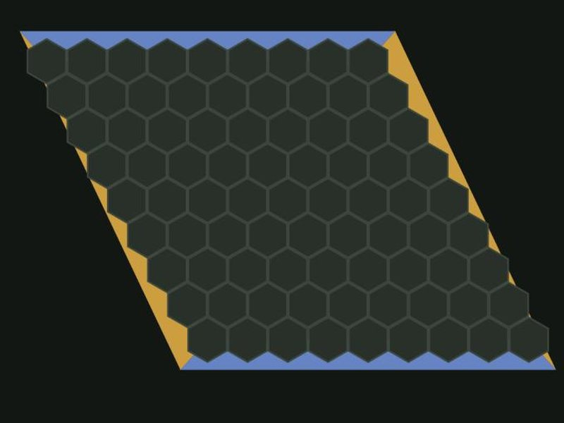
完成六角形の盤で、自分の色の辺と辺を石でつないだら勝ち。昔からある公開のゲームを作ってみました。
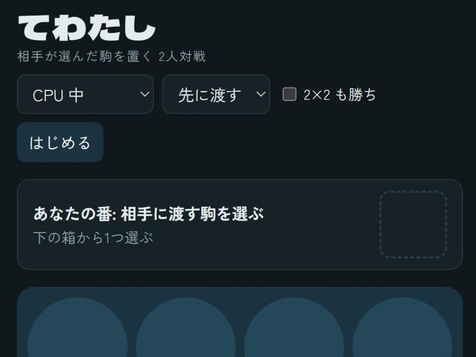
完成置く駒を相手が選んで渡してくる2人対戦。クアルトと同じ型を、自分なりに作ってみた試しです。
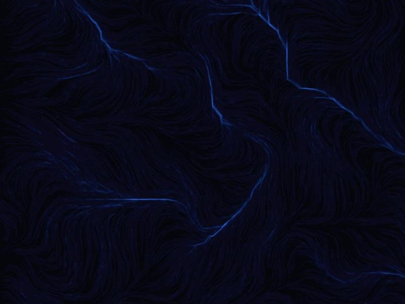
完成触った跡が作品に残り、次の動きを変える。ブラウザで動く実験の記録です。